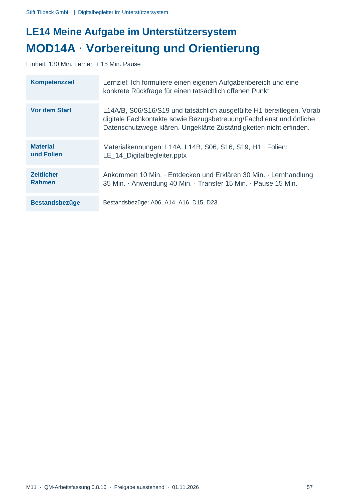
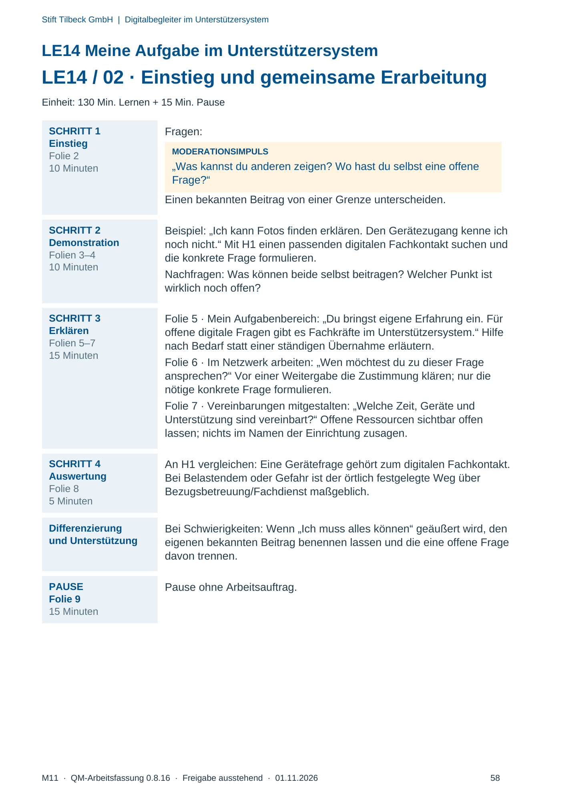
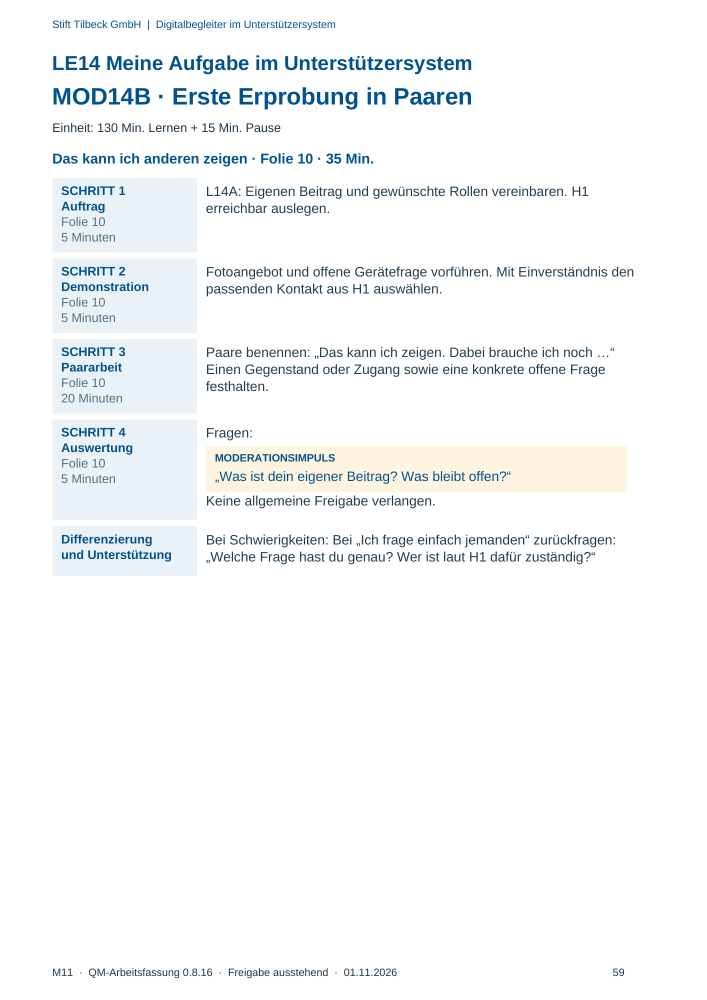
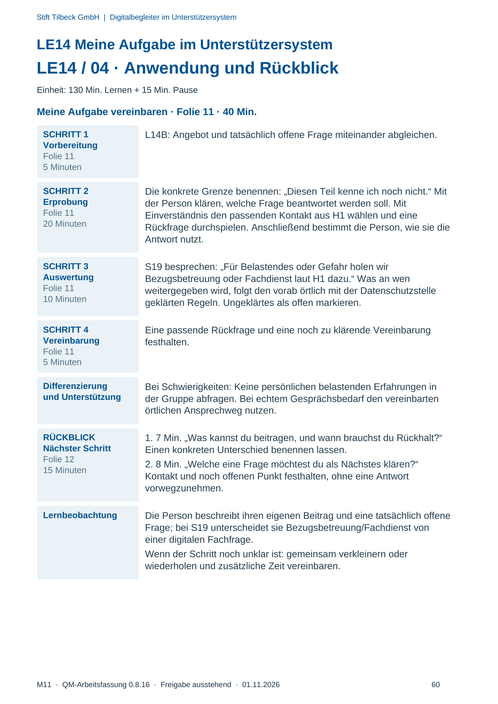

M11 · Originalseite 57, 58, 59, 60
Durchführungshilfe
Gezielte Original-Druckauswahl.
Fragen und Ankreuzfelder werden auf dem Ausdruck bearbeitet. Die Lesefassung speichert keine Antworten.
Lesefassung · Seite 57
Stift Tilbeck GmbH | Digitalbegleiter im Unterstützersystem
LE14 Meine Aufgabe im Unterstützersystem
MOD14A · Vorbereitung und Orientierung
Einheit: 130 Min. Lernen + 15 Min. Pause
Kompetenzziel Lernziel: Ich formuliere einen eigenen Aufgabenbereich und eine
konkrete Rückfrage für einen tatsächlich offenen Punkt.
Vor dem Start L14A/B, S06/S16/S19 und tatsächlich ausgefüllte H1 bereitlegen. Vorab
digitale Fachkontakte sowie Bezugsbetreuung/Fachdienst und örtliche
Datenschutzwege klären. Ungeklärte Zuständigkeiten nicht erfinden.
Material
und Folien
Materialkennungen: L14A, L14B, S06, S16, S19, H1 · Folien:
LE_14_Digitalbegleiter.pptx
Zeitlicher
Rahmen
Ankommen 10 Min. · Entdecken und Erklären 30 Min. · Lernhandlung
35 Min. · Anwendung 40 Min. · Transfer 15 Min. · Pause 15 Min.
Bestandsbezüge Bestandsbezüge: A06, A14, A16, D15, D23.
Originalseite ansehen

Lesefassung · Seite 58
Stift Tilbeck GmbH | Digitalbegleiter im Unterstützersystem
LE14 Meine Aufgabe im Unterstützersystem
LE14 / 02 · Einstieg und gemeinsame Erarbeitung
Einheit: 130 Min. Lernen + 15 Min. Pause
SCHRITT 1
Einstieg
Folie 2
10 Minuten
Fragen:
MODERATIONSIMPULS
„Was kannst du anderen zeigen? Wo hast du selbst eine offene
Frage?“
Einen bekannten Beitrag von einer Grenze unterscheiden.
SCHRITT 2
Demonstration
Folien 3–4
10 Minuten
Beispiel: „Ich kann Fotos finden erklären. Den Gerätezugang kenne ich
noch nicht.“ Mit H1 einen passenden digitalen Fachkontakt suchen und
die konkrete Frage formulieren.
Nachfragen: Was können beide selbst beitragen? Welcher Punkt ist
wirklich noch offen?
SCHRITT 3
Erklären
Folien 5–7
15 Minuten
Folie 5 · Mein Aufgabenbereich: „Du bringst eigene Erfahrung ein. Für
offene digitale Fragen gibt es Fachkräfte im Unterstützersystem.“ Hilfe
nach Bedarf statt einer ständigen Übernahme erläutern.
Folie 6 · Im Netzwerk arbeiten: „Wen möchtest du zu dieser Frage
ansprechen?“ Vor einer Weitergabe die Zustimmung klären; nur die
nötige konkrete Frage formulieren.
Folie 7 · Vereinbarungen mitgestalten: „Welche Zeit, Geräte und
Unterstützung sind vereinbart?“ Offene Ressourcen sichtbar offen
lassen; nichts im Namen der Einrichtung zusagen.
SCHRITT 4
Auswertung
Folie 8
5 Minuten
An H1 vergleichen: Eine Gerätefrage gehört zum digitalen Fachkontakt.
Bei Belastendem oder Gefahr ist der örtlich festgelegte Weg über
Bezugsbetreuung/Fachdienst maßgeblich.
Differenzierung
und Unterstützung
Bei Schwierigkeiten: Wenn „Ich muss alles können“ geäußert wird, den
eigenen bekannten Beitrag benennen lassen und die eine offene Frage
davon trennen.
PAUSE
Folie 9
15 Minuten
Pause ohne Arbeitsauftrag.
Originalseite ansehen

Lesefassung · Seite 59
Stift Tilbeck GmbH | Digitalbegleiter im Unterstützersystem
LE14 Meine Aufgabe im Unterstützersystem
MOD14B · Erste Erprobung in Paaren
Einheit: 130 Min. Lernen + 15 Min. Pause
Das kann ich anderen zeigen · Folie 10 · 35 Min.
SCHRITT 1
Auftrag
Folie 10
5 Minuten
L14A: Eigenen Beitrag und gewünschte Rollen vereinbaren. H1
erreichbar auslegen.
SCHRITT 2
Demonstration
Folie 10
5 Minuten
Fotoangebot und offene Gerätefrage vorführen. Mit Einverständnis den
passenden Kontakt aus H1 auswählen.
SCHRITT 3
Paararbeit
Folie 10
20 Minuten
Paare benennen: „Das kann ich zeigen. Dabei brauche ich noch …“
Einen Gegenstand oder Zugang sowie eine konkrete offene Frage
festhalten.
SCHRITT 4
Auswertung
Folie 10
5 Minuten
Fragen:
MODERATIONSIMPULS
„Was ist dein eigener Beitrag? Was bleibt offen?“
Keine allgemeine Freigabe verlangen.
Differenzierung
und Unterstützung
Bei Schwierigkeiten: Bei „Ich frage einfach jemanden“ zurückfragen:
„Welche Frage hast du genau? Wer ist laut H1 dafür zuständig?“
Originalseite ansehen

Lesefassung · Seite 60
Stift Tilbeck GmbH | Digitalbegleiter im Unterstützersystem
LE14 Meine Aufgabe im Unterstützersystem
LE14 / 04 · Anwendung und Rückblick
Einheit: 130 Min. Lernen + 15 Min. Pause
Meine Aufgabe vereinbaren · Folie 11 · 40 Min.
SCHRITT 1
Vorbereitung
Folie 11
5 Minuten
L14B: Angebot und tatsächlich offene Frage miteinander abgleichen.
SCHRITT 2
Erprobung
Folie 11
20 Minuten
Die konkrete Grenze benennen: „Diesen Teil kenne ich noch nicht.“ Mit
der Person klären, welche Frage beantwortet werden soll. Mit
Einverständnis den passenden Kontakt aus H1 wählen und eine
Rückfrage durchspielen. Anschließend bestimmt die Person, wie sie die
Antwort nutzt.
SCHRITT 3
Auswertung
Folie 11
10 Minuten
S19 besprechen: „Für Belastendes oder Gefahr holen wir
Bezugsbetreuung oder Fachdienst laut H1 dazu.“ Was an wen
weitergegeben wird, folgt den vorab örtlich mit der Datenschutzstelle
geklärten Regeln. Ungeklärtes als offen markieren.
SCHRITT 4
Vereinbarung
Folie 11
5 Minuten
Eine passende Rückfrage und eine noch zu klärende Vereinbarung
festhalten.
Differenzierung
und Unterstützung
Bei Schwierigkeiten: Keine persönlichen belastenden Erfahrungen in
der Gruppe abfragen. Bei echtem Gesprächsbedarf den vereinbarten
örtlichen Ansprechweg nutzen.
RÜCKBLICK
Nächster Schritt
Folie 12
15 Minuten
1. 7 Min. „Was kannst du beitragen, und wann brauchst du Rückhalt?“
Einen konkreten Unterschied benennen lassen.
2. 8 Min. „Welche eine Frage möchtest du als Nächstes klären?“
Kontakt und noch offenen Punkt festhalten, ohne eine Antwort
vorwegzunehmen.
Lernbeobachtung Die Person beschreibt ihren eigenen Beitrag und eine tatsächlich offene
Frage; bei S19 unterscheidet sie Bezugsbetreuung/Fachdienst von
einer digitalen Fachfrage.
Wenn der Schritt noch unklar ist: gemeinsam verkleinern oder
wiederholen und zusätzliche Zeit vereinbaren.
Originalseite ansehen
